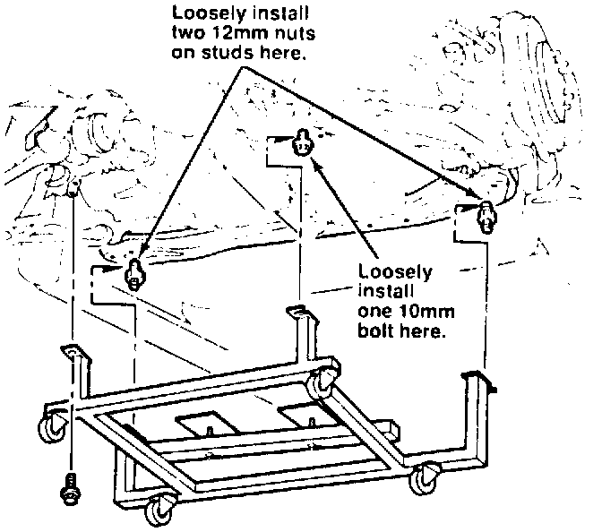
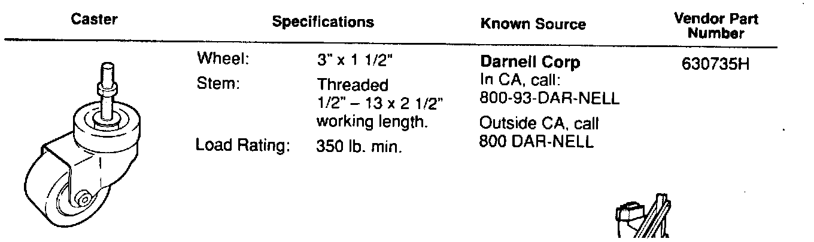
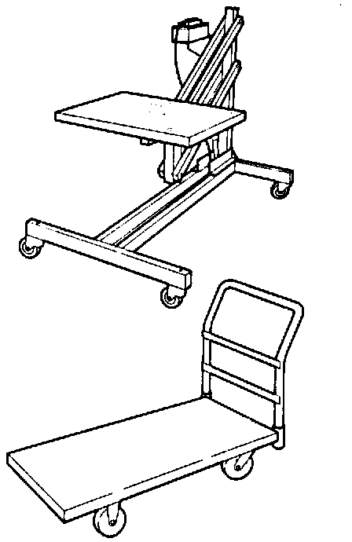

Engine - Removal and Installation Procedure
July 22, 1991BULLETIN NO.
91-037
YEAR
1991
MODEL
NSX
VIN APPLICATION
ALL
NSX Engine Removal/Installation Procedure
The NSX engine removal/installation procedure has been changed. Instead of a chain hoist, as shown in the NSX service manual, use the fixture shown in the Acura Advantage video release titled "1991 New Model Introduction: Engine" (Reorder # E1329). The fixture should be set up as described on the back of this bulletin. To use the fixture, follow this procedure:
Begin on page 5-19 in the NSX Service Manual. (The sequence of these steps will be different if you use a lifting table.)
^ Follow steps 1 through 47 as written.
^ After step 47. write this note in your manual: "Refer to Engine Service Bulletin 91-037."
^ Instead of step 48, follow these steps:

48(a). Before you attach the fixture to the engine cradle. loosely install two 12 mm nuts and one 10 mm bolt in locations shown.
48(b). With the help of an assistant, slide the fixture into position on the nuts and bolt you just installed on the cradle. Then install the other 10 mm bolt through the fixture's last mount hole. Securely tighten both bolts and both nuts.
48(c). Adjust the fixture support pads firmly against the oil pan and the transmission housing to support the engine/transmission.
^ Instead of step 49, follow these steps:
49(a). Reinstall the front engine mount bolt.
49(b). Lower the car until the fixture is flat on the floor (or the cart) and supporting the weight of the engine-transmission-cradle assembly.
^ Follow steps 50 through 52 as written.
^ Delete steps 53 through 56.
^ Follow steps 57 through 61 as written. (Step numbers 58 and 59 were skipped.)
Fixture Setup Instructions
Before using the NSX engine fixture, set it up according to A, B, or C

A. Purchase 4 of the casters described here (or their equivalent), and install them in the pre-drilled holes in the corners of the fixture. This is the most convenient way to use the fixture (no other equipment is needed), and it's the least expensive, unless you already have either a lifting table (see B) or a platform truck (see C).

B. If you have a lifting table (OTC P/N 1585, or equivalent), you can use it (instead of casters) to support the fixture, Secure the fixture to the table with at least 2 bolts, one on each side.
C. If you have a platform truck ("warehouse cart") with 2" x 4" platform, 1500 lb. capacity, and removable handle, you can use it (instead of casters) to support the fixture. Drill holes in the platform so you'll be able to secure the fixture to it with at least 2 bolts, one on each side.